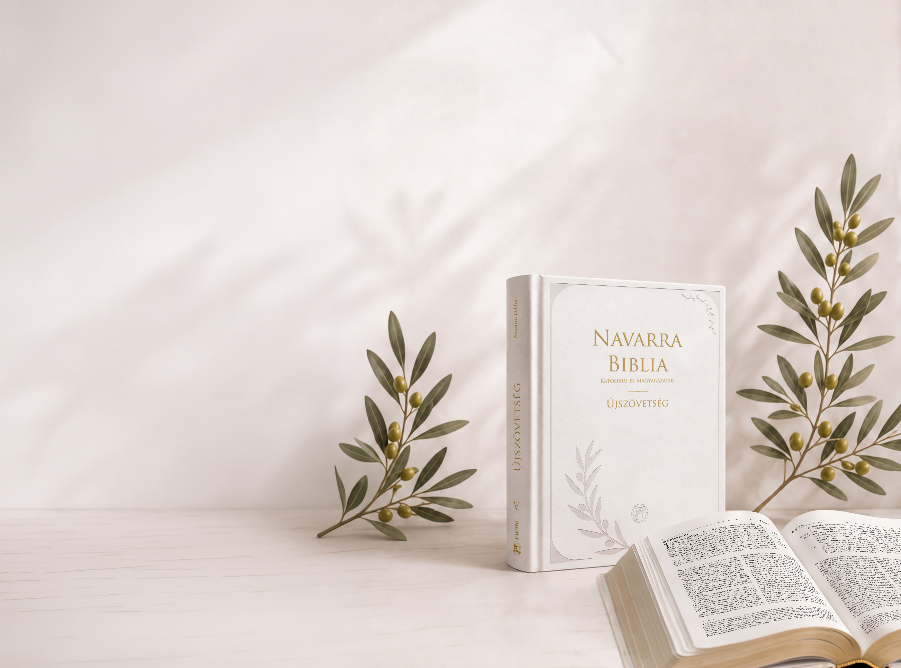

![Támogatás]()
Teljes bibliai szöveg
A Káldi–Neovulgáta Bibliafordítás szövegével.
A Vox Dei közösségi kiadása
A Navarra Katolikus és Magyarázatos Biblia nem csupán egy könyv – egy út Istenhez.

Olvasd az Igét.
Értsd az Egyházzal.
Éld Istennel.
Isten Igéje. Közelebb hozzád.
A Navarra Biblia segítségével mélyebben megérted a Szentírást, és közelebb kerülsz a téged szerető Istenhez.
A bibliai szöveg és az Egyház élő hagyományára épülő magyarázatok együtt segítik az olvasást, a tanulmányozást és az imádságot.
Minden. Egy kötetben.
A Káldi–Neovulgáta Bibliafordítás szövegével.
Egyházatyák, szentek írásai és pápai dokumentumok alapján.
Az Egyház tanítására és a Katekizmusra építve.
Teológiai értelmezés, történelmi háttér és gyakorlati alkalmazás.
„Jézus életének minden eseménye, minden példabeszéde, minden szava és minden tette része a mi mindennapi életünknek.”
Közösségi kiadás
Az előrendelők száma közösen alakítja a végleges árat. Minden csatlakozó közelebb visz a következő árszinthez.
Az automatikusan frissülő számláló az előrendelési rendszer csatlakoztatása után jelenik meg.
A végleges vételár a kampány lezárásakor elért közösségi árszint szerint alakul.
Megrendelem az EWTN Shopban →Támogatás

I. Mózes öt könyve
II. Történeti könyvek
III. Bölcsességi könyvek
IV. A próféták könyvei
V. Újszövetség
Patrónus szeretnék lenni
1 000 000 Ft Kiemelt támogatás a teljes ötkötetes kiadáshoz.Támogatom a Biblia kiadását
50 000 Ft Ajándékba egy Bibliát küldünk Neked.Támogatom a Biblia kiadását
150 000 Ft Ajándékba két Bibliát küldünk Neked.Adományfizetés módja
A támogatást a Vox Dei bankszámlaszámára lehet utalni. Kérjük, a közlemény rovatban tüntesd fel az alábbiak valamelyikét:
Navarra Biblia / Biblia / Szentírás
Következő lépés
A Navarra Katolikus és Magyarázatos Biblia 5 kötetben kerül kiadásra a következő években, az alábbi sorrendben:
V. Újszövetség
elsőként jelenik megI. Mózes öt könyve
II. Történeti könyvek
III. Bölcsességi könyvek
IV. A próféták könyvei
Lapozz bele
A mintakötet 121 oldalát lapozhatod végig. Nagyíts bele, használd a nyílbillentyűket, vagy nyisd meg teljes képernyőn.
A mintakötet betöltése…
Az oldal nem tölthető be.
Csatlakozz a közösségi kiadáshoz
A rendelés részleteit és az aktuális lehetőségeket az EWTN Shopban találod.